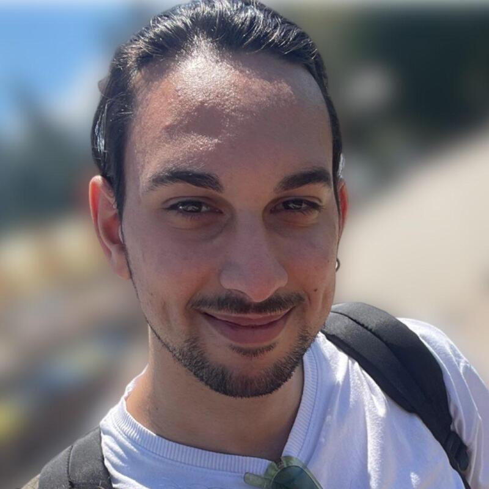

CLINICAL PLANNER↗
CLINICAL PLANNER↗
VR / PCUNITY · C#
Fondazione Monasterio
3D anatomical model exploration and interaction for medical training and surgical planning.
View project ↗UNITY DEVELOPER / VR · XR · GAMEPLAY
A Unity Developer focused on Game Design, VR/XR applications, interactive 3D experiences and gameplay systems.
My background combines game design and development. I enjoy turning requirements into working interactive systems, learning new tools and collaborating with multidisciplinary teams.

That's me — turning ideas into working interactive systems.
// 02 — MY WORKS
A selection of professional applications and personal prototypes. Open a project to explore the problem, implementation and technical decisions.
CLINICAL PLANNER↗
3D anatomical model exploration and interaction for medical training and surgical planning.
View project ↗ IMMERSIVE EXPERIENCE↗
IMMERSIVE EXPERIENCE↗
 IMMERSIVE EXPERIENCE↗
IMMERSIVE EXPERIENCE↗
Therapeutic VR application to support patients' relaxation through immersive environments.
View project ↘ IMMERSIVE TRAINING↗
IMMERSIVE TRAINING↗
VR training simulation for nursing students in a realistic hospital room environment.
View project ↘ GAMEPLAY SYSTEMS↗
GAMEPLAY SYSTEMS↗
Movement, jumping, wall interactions, knockback, death states and audio feedback.
Ask for project details ↗ UNREAL / C++↗
UNREAL / C++↗
Tank movement, turret logic, enemy response, audio feedback and level progression.
Ask for project details ↗ AI / BEHAVIOR TREES↗
AI / BEHAVIOR TREES↗
Enemies detect the player, pursue, search after losing sight and return to patrol.
Ask for project details ↗// 03 — TECHNICAL KNOWLEDGE
A practical overview of the areas I work in and continue to develop.
Designing and building application logic, tools and interactive systems in C# and C++, from requirements to a working build.
Controller interaction, immersive UI and interaction design for VR applications.
Runtime manipulation of 3D models, materials, transparency and object transforms.
Learning and prototyping gameplay systems with C++ and Blueprints.
// 04 — EXPERIENCE
Unity Developer / Internship
Worked on immersive applications and VR experiences, including projects involving 360° video and interactive interfaces.
Unity Developer / Internship
Developed a PC and VR application for exploring 3D anatomical models, including model reconstruction at runtime from MRI, materials and organ transparency.
VR, Metaverse & Gaming course
Technical training focused on immersive application development and game technologies.
Game Design Development course
Technical training focused on Game Design principles and game technologies.
// 05 — CONTACT
Have a role or project in mind? I'd be happy to talk.
Get in touch ↗